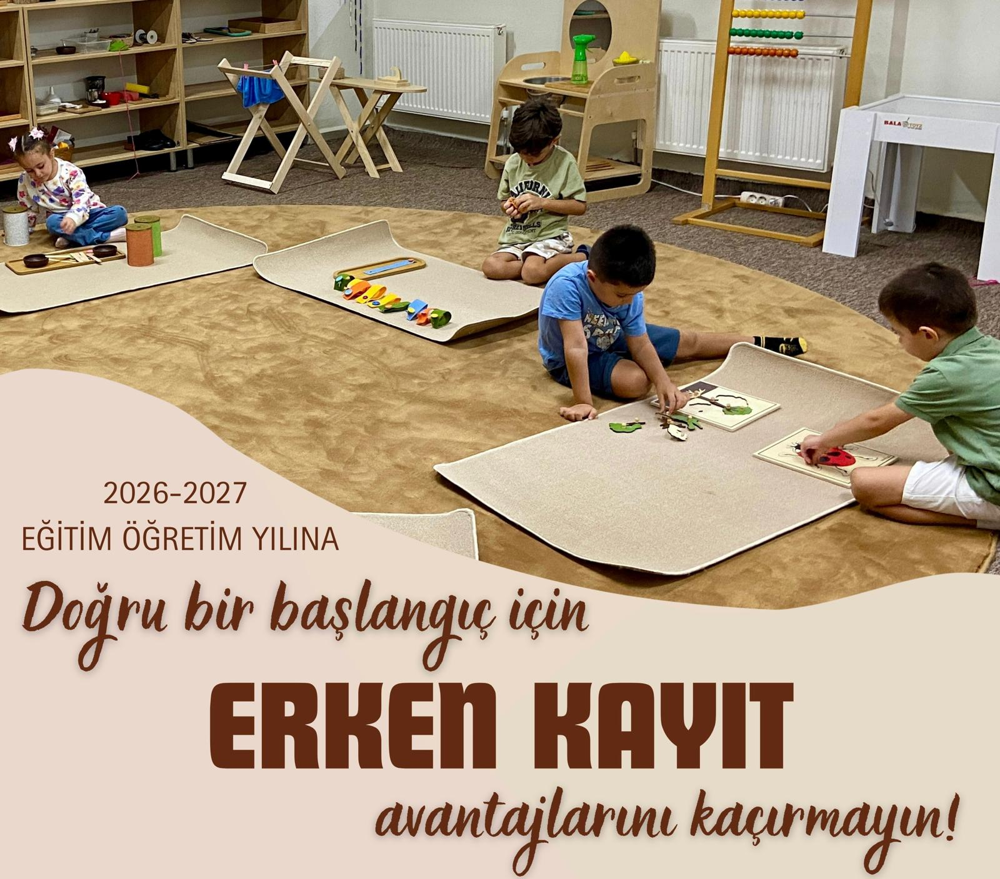
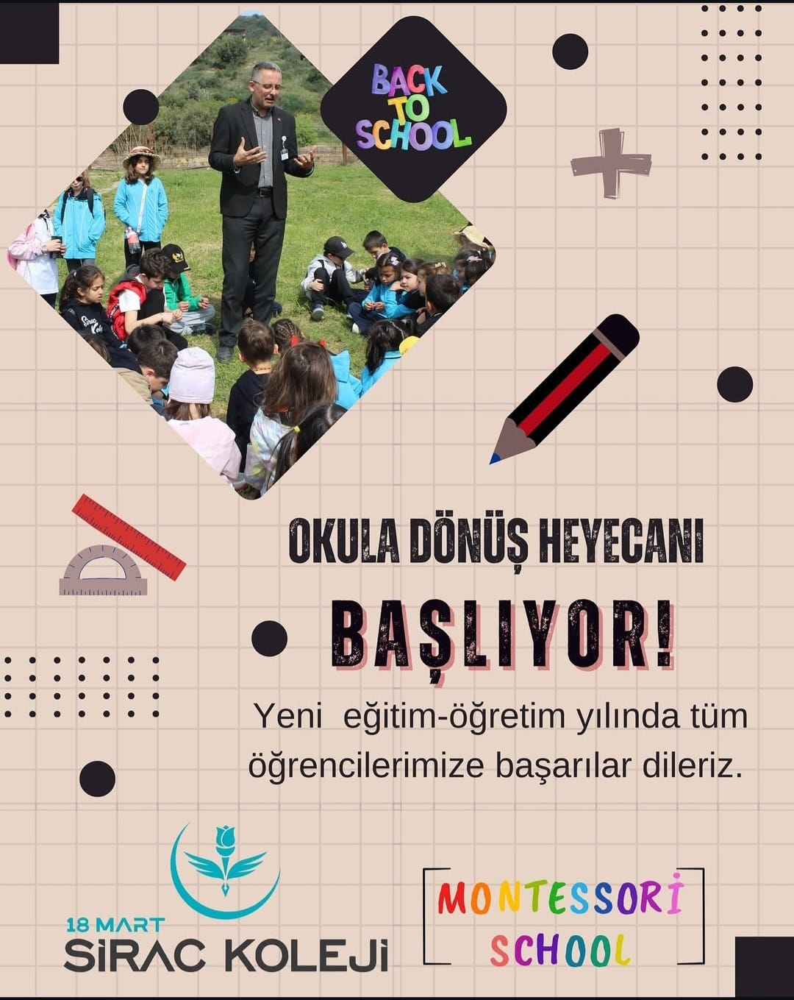
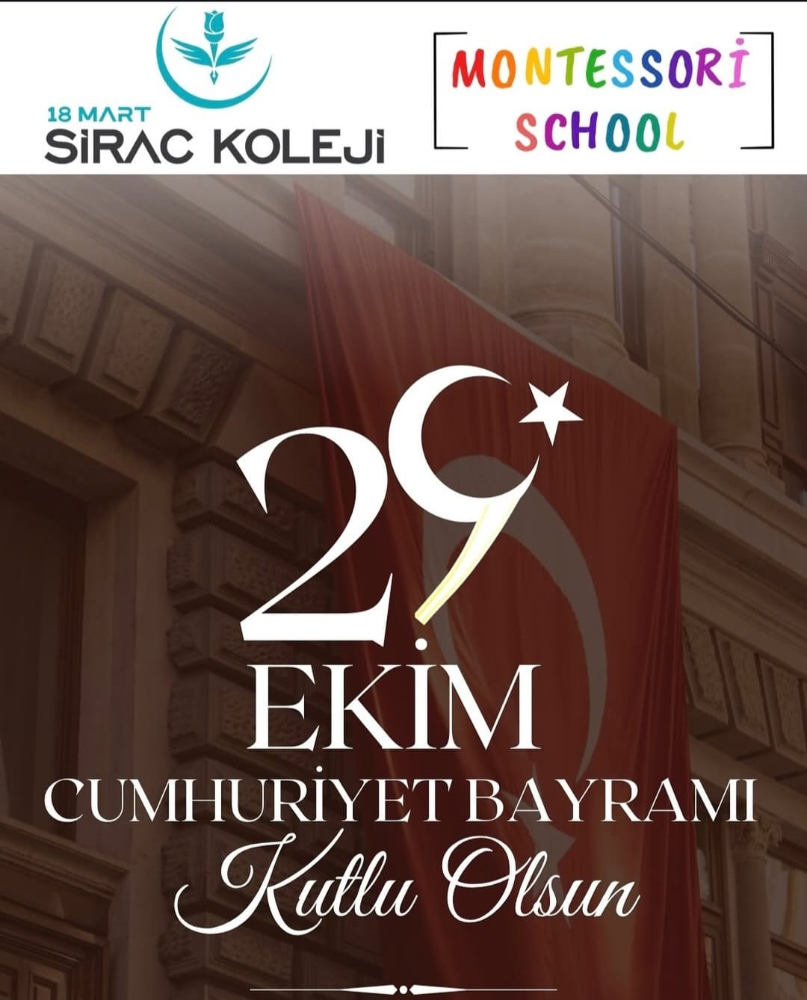
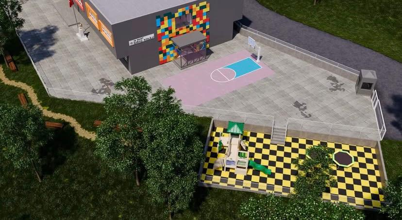
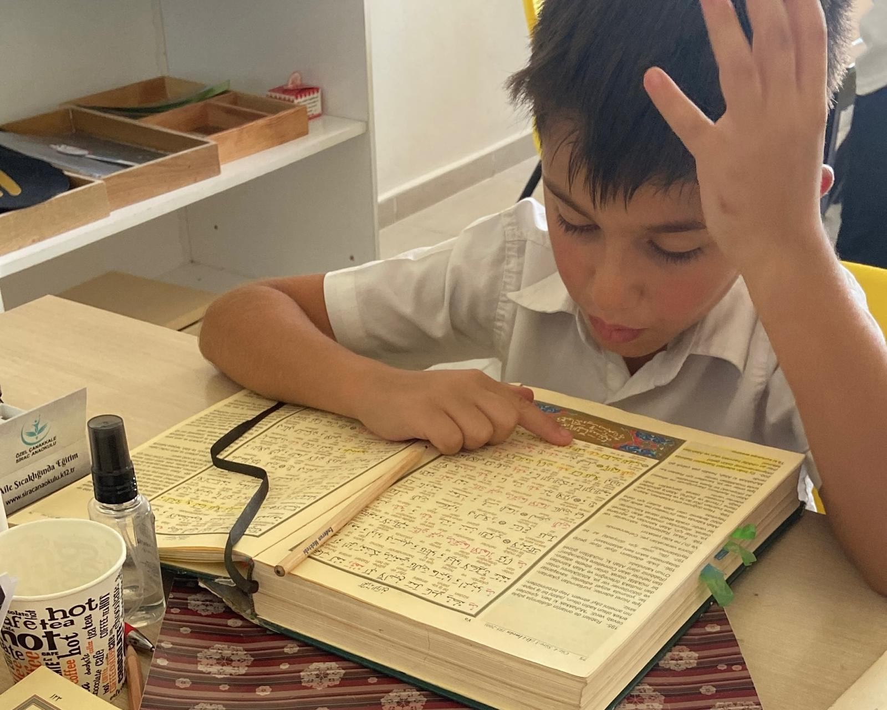
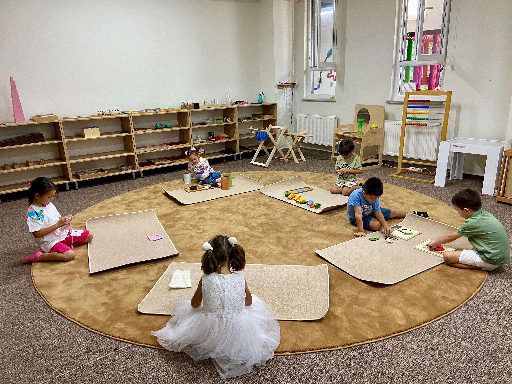

Geleneksel değerlerle modern eğitimi harmanlayan özgün yaklaşımımız

Kur'an-ı Kerim, Siyer ve Tefekkür dersleri ile milli-manevi değerler kazanımı.

Somut öğrenme araçları ile çocuğun kendi hızında, keşfederek geliştiği özel atölyeler.

Global vizyon için iki dilli eğitim modeli; Speaking odaklı modern yaklaşımlar.

Sanatsal becerileri geliştiren, el-göz koordinasyonunu artıran yaratıcı atölye çalışmaları.

Ruhsal gelişimi destekleyen, estetik algıyı güçlendiren musiki ve enstrüman eğitimleri.

Basketbol, jimnastik ve fiziksel gelişim odaklı çok yönlü branş eğitimleri.
